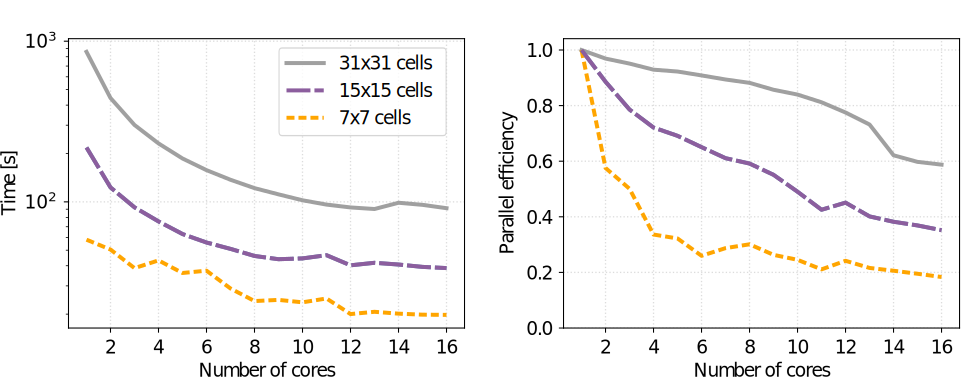
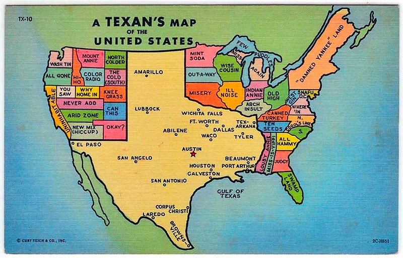

Parallelization Tips for
Geoprocessing with GRASS GIS
Anna Petrasova, Vaclav Petras
NCSU GeoForAll Lab
at the
Center for Geospatial Analytics
NC State University
Anna Petrasova
- Geospatial Research Software Engineer at the Center for Geospatial Analytics, NC State University
- GRASS GIS Development Team Member
- GRASS GIS Project Steering Committee Member
- Open Source Geospatial Foundation Charter Member

What is GRASS GIS?
Open-source desktop GIS

What is GRASS GIS?
Processing backend in QGIS
 Image source: baharmon.github.io/grass-in-qgis
Image source: baharmon.github.io/grass-in-qgis
What is GRASS GIS?
Geospatial data analytics tool in RStudio
 Image source: https://veroandreo.github.io/grass_opengeohub2021/presentation.html
Image source: https://veroandreo.github.io/grass_opengeohub2021/presentation.html
What is GRASS GIS?
Geovisualization and data analytics tool in a Python notebook
What is GRASS GIS?
Geoprocessing engine running in HPC environment

What is GRASS GIS?
Geospatial platform for developing custom models
What is GRASS GIS?
Cloud geoprocessing backend
 Image source: neteler.gitlab.io/actinia-introduction/
Image source: neteler.gitlab.io/actinia-introduction/
Parallelization in GRASS: Start simple
r.neighbors input=elevation output=elevation_smoothed size=15 nprocs=4
Tools with parallel support
 r.neighbors
r.neighbors
 r.patch
r.patch
 r.sun
r.sun
 v.surf.rst
v.surf.rst
 r.sim.water
r.sim.water
 r.sim.sediment
r.resamp.interp
r.sim.sediment
r.resamp.interp
 r.univar
r.univar
And more at grass.osgeo.org/grass-stable/manuals/keywords.html#parallel
See manual pages for benchmarks
 r.series
r.series
 r.patch
r.patch
 r.neighbors
r.neighbors
Use 4 cores to get most speed improvements with high parallel efficiency.
Workflow-level parallelization
Run multiple independent tasks in the background
r.grow.distance input=roads distance=dist_to_roads &
r.grow.distance input=water distance=dist_to_water &
r.grow.distance input=forest distance=dist_to_forest &
Workflow-level parallelization
Run tasks with GNU Parallel (or alternatives)
echo r.grow.distance input=roads distance=dist_to_roads > jobs.txt
echo r.grow.distance input=water distance=dist_to_water >> jobs.txt
echo r.grow.distance input=forest distance=dist_to_forest >> jobs.txt
parallel --jobs 3 < jobs.txt
Run "hybrid" tasks:
r.neighbors input=forest output=forest_percentage size=37 nprocs=4 &
r.neighbors input=wetland output=wetland_percentage size=37 nprocs=4 &
Tiling approach
from grass.pygrass.modules.grid import GridModule
grd = GridModule("v.to.rast", input="roads", output="roads",
use="val", processes=4)
grd.run()
r.mapcalc.tiled "log_dist = if (dist == 0, 0, log(dist))" nprocs=4

Let's do some Python scripting
- multiprocessing, concurrent.futures packages
- Use case: calling GRASS tools and workflows in parallel
from multiprocessing import Pool
def compute(value):
# do something with the value
with Pool(processes=4) as pool:
pool.map(compute, range(0, 10))
Example: multiple viewsheds
from multiprocessing import Pool
import grass.script as gs
def viewshed(point):
x, y, cat = point
name = f"viewshed_{cat}"
gs.run_command("r.viewshed", input="elevation", output=name,
coordinates=(x, y))
return name
# viewpoints = [(x1, y1, category1), (x2, y2, category2), ...]
with Pool(processes=4) as pool:
maps = pool.map(viewshed, viewpoints)
- ✔ independent computations
- ✔ different output names
- ✔ same computational region
Tasks with different region
import os
from multiprocessing import Pool
import grass.script as gs
def viewshed(point):
x, y, cat = point
name = f"viewshed_{cat}"
os.environ["GRASS_REGION"] = gs.region_env(e=x + 300, w=x - 300,
n=y + 300, s=y - 300,
align="elevation")
gs.run_command("r.viewshed", input="elevation", output=name,
coordinates=(x, y), max_distance=300)
return name
# viewpoints = [(x1, y1, category1), (x2, y2, category2), ...]
with Pool(processes=4) as pool:
maps = pool.map_async(viewshed, viewpoints).get()
Tasks with different region
import os
from multiprocessing import Pool
import grass.script as gs
def viewshed(point):
x, y, cat = point
name = f"viewshed_{cat}"
os.environ["GRASS_REGION"] = gs.region_env(e=x + 300, w=x - 300,
n=y + 300, s=y - 300,
align="elevation")
gs.run_command("r.viewshed", input="elevation", output=name,
coordinates=(x, y), max_distance=300)
return name
# viewpoints = [(x1, y1, category1), (x2, y2, category2), ...]
with Pool(processes=4) as pool:
maps = pool.map_async(viewshed, viewpoints).get()
Progress bar
from tqdm import tqdm
from multiprocessing import Pool
import grass.script as gs
def viewshed(point):
x, y, cat = point
name = f"viewshed_{cat}"
gs.run_command("r.viewshed", input="elevation", output=name,
coordinates=(x, y))
return name
# viewpoints = [(x1, y1, category1), (x2, y2, category2), ...]
with Pool(processes=4) as pool:
maps = list(tqdm(pool.imap(viewshed, viewpoints),
total=len(viewpoints)))

Multi-threading with OpenMP
- parallelization of geospatial algorithms in C
- shared memory
- relatively easy integration into existing source code
- single code base for all platforms
#pragma omp parallel if(threaded) private(row, col, i)
{
int t_id = 0;
#if defined(_OPENMP)
t_id = omp_get_thread_num();
#endif
struct input *in = inputs[t_id];
DCELL *val = values[t_id];
...
grass.benchmark library
from grass.benchmark import benchmark_nprocs, nprocs_plot
from grass.pygrass.modules import Module
module = Module("r.neighbors", input="DEM", size=9, output="benchmark",
run_=False, overwrite=True)
result = benchmark_nprocs(module, label="size 3", max_nprocs=12, repeat=3)
nprocs_plot([result], filename="benchmark.svg")

Example: r.neighbors
 Image source: r.neighbors manual page
Image source: r.neighbors manual page
Focal (neighborhood) operations on a raster
r.neighbors benchmark 400 million cells
\[\mbox{parallel efficiency} = \frac{\mbox{serial processing time}}{N \times \mbox{parallel processing time with N cores}} \]
Use more cores for r.neighbors with large window sizes.
Running GRASS in non-interactive session
Run module in existing mapset:
grass ~/grassdata/US_albers/visibility --exec r.viewshed input=elevation ...
Run module in a newly created mapset:
grass -c ~/grassdata/US_albers/visibility --exec r.viewshed input=elevation ...
Run Python script in existing mapset:
grass ~/grassdata/US_albers/visibility --exec python viewshed_script.py
Run Python script in a temporary mapset:
grass --tmp-mapset ~/grassdata/US_albers/ --exec python viewshed_script.py
Running GRASS commands in parallel
Generate commands:
jobs.sh
grass ~/grassdata/nc_spm_08_grass7/analysis1 --exec python myscript.py 1
grass ~/grassdata/nc_spm_08_grass7/analysis2 --exec python myscript.py 2
grass ~/grassdata/nc_spm_08_grass7/analysis3 --exec python myscript.py 3
grass ~/grassdata/nc_spm_08_grass7/analysis4 --exec python myscript.py 4
grass ~/grassdata/nc_spm_08_grass7/analysis5 --exec python myscript.py 5
grass ~/grassdata/nc_spm_08_grass7/analysis6 --exec python myscript.py 6
...
Run in parallel:
parallel --jobs 8 < jobs.sh
Example: Scaling urban growth model

Example: Scaling urban growth model
- r.futures addon: FUTURES urban growth model
- computed at 30-m resolution (16 billion cells) on HPC
- 50 stochastic runs annually from 2020 to 2100
CONUS data preprocessing
| GRASS tool | window size | cores | serial time | with OpenMP |
|---|---|---|---|---|
| r.slope.aspect | 3 x 3 | 12 | 37 min | 12 min |
| r.mfilter | 61 x 61 | 32 | 4.9 days | 4.3 h |
Parallelization by US states
Tasks distributed across nodes using MPI (Message Passing Interface)jobs.txt
grass state_1 --exec r.futures.simulation subregions=state_1 ...
grass state_2 --exec r.futures.simulation subregions=state_2 ...
grass state_3 --exec r.futures.simulation subregions=state_3 ...

Parallelization by US states
Gets tricky if some processes take much longer than others (looking at you, Texas) texasproud.com/how-big-is-texas-its-huge
Parallelization by US states
Gets tricky if some processes take much longer than others (looking at you, Texas)
texasproud.com/how-big-is-texas-its-huge
Resources
- petrasovaa.github.io/FUTURES-CONUS-talk/foss4gNA2023.html
- GRASS FOSS4G NA 2023 workshop
- OpenGeoHub 2023: Parallelization of geoprocessing workflows in GRASS GIS and Python
- FUTURES data and model
- GRASS Mentoring and Student Grants programs